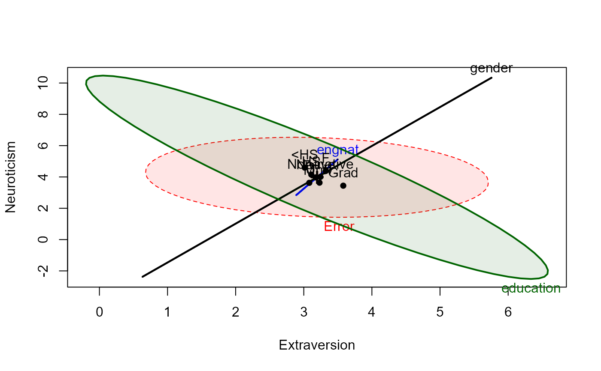
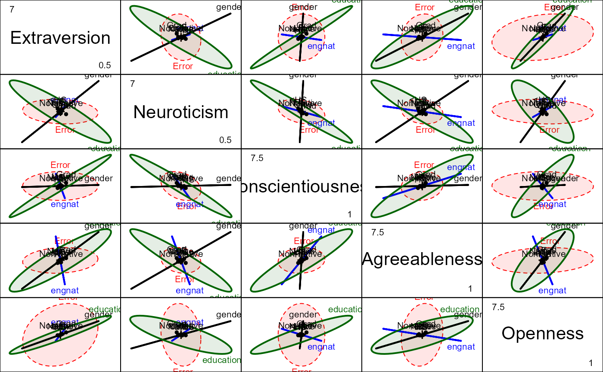
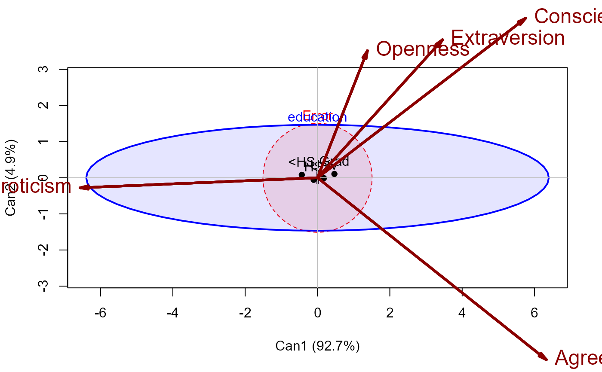

The Ten Item Personality Inventory (Gosling et al. 2003) is a brief inventory of the Big Five personality domains (Extraversion, Neuroticism, Conscientiousness, Agreeableness, and Openness to experience). This dataset, originally from the Open Source Psychometrics Project (https://openpsychometrics.org/), was used by Jones et al. (2020), from which we obtained this version.
Format
A data frame with 1799 observations on the following 16 variables.
Extraversiona numeric vector
Neuroticisma numeric vector
Conscientiousnessa numeric vector
Agreeablenessa numeric vector
Opennessa numeric vector
educationan ordered factor with levels
<HS<HS<Univ<Gradurbanan ordered factor with levels
Rural<Suburban<Urbangendera factor with levels
MFengnata factor with levels
NativeNon-nativeagea numeric vector
religiona factor with levels
AgnosticAtheistBuddhistChristian (Catholic)Christian (Mormon)Christian (Protestant)Christian (Other)HinduJewishMuslimSikhOtherorientationa factor with levels
HeterosexualBisexualHomosexualAsexualOtherracea factor with levels
AsianArabBlackIndig-WhiteOthervoteda factor with levels
YesNomarrieda factor with levels
Never marriedCurrently marriedPreviously marriedfamilysizea numeric vector
Source
Jones, P.J., Mair, P., Simon, T. et al. (2020). Network Trees: A Method for Recursively Partitioning Covariance Structures. Psychometrika, 85, 926?945. https://doi.org/10.1007/s11336-020-09731-4
Details
In addition to scores on the Big Five scales, the dataset contains 11 demographic variables on the participants, potentially useful in multivariate analyses.
Scores on each personality domain were calculated by averaging items
assigned to each domain (after reverse scoring specific items). In this
version, total scores for each scale were calculated by averaging the
positively and negatively coded items, for example, TIPI$Extraversion
<- (TIPI$E + (8-TIPI$E_r))/2.
Then, for the present purposes, some tidying was done:
100 cases with `gender=="Other" were deleted;
codes for levels of `education`, `engnat` and `race` were abbreviated for ease of use in graphics.
References
Gosling, S. D., Rentfrow, P. J., & Swann, W. B, Jr. (2003). A very brief measure of the Big-Five personality domains. Journal of Research in Personality, 37, 504?528.
Examples
data(TIPI)
# fit an mlm
tipi.mlm <- lm(cbind(Extraversion, Neuroticism, Conscientiousness, Agreeableness, Openness)
~ engnat + gender + education, data = TIPI )
car::Anova(tipi.mlm)
#>
#> Type II MANOVA Tests: Pillai test statistic
#> Df test stat approx F num Df den Df Pr(>F)
#> engnat 1 0.025927 9.327 5 1752 8.817e-09 ***
#> gender 1 0.088275 33.926 5 1752 < 2.2e-16 ***
#> education 3 0.080337 9.653 15 5262 < 2.2e-16 ***
#> ---
#> Signif. codes: 0 '***' 0.001 '**' 0.01 '*' 0.05 '.' 0.1 ' ' 1
heplot(tipi.mlm, fill=TRUE, fill.alpha=0.1)

pairs(tipi.mlm, fill=TRUE, fill.alpha=0.1)

# candisc works best for factors with >2 levels
library(candisc)
tipi.can <- candisc(tipi.mlm, term="education")
tipi.can
#>
#> Canonical Discriminant Analysis for education:
#>
#> CanRsq Eigenvalue Difference Percent Cumulative
#> 1 0.0740709 0.0799963 0.075792 92.7124 92.712
#> 2 0.0041870 0.0042046 0.075792 4.8730 97.585
#> 3 0.0020791 0.0020834 0.075792 2.4146 100.000
#>
#> Test of H0: The canonical correlations in the
#> current row and all that follow are zero
#>
#> LR test stat approx F numDF denDF Pr(> F)
#> 1 0.92014 9.8819 15 4842.4 <2e-16 ***
#> 2 0.99374 1.3792 8 3510.0 0.2002
#> 3 0.99792 1.2195 3 1756.0 0.3011
#> ---
#> Signif. codes: 0 '***' 0.001 '**' 0.01 '*' 0.05 '.' 0.1 ' ' 1
heplot(tipi.can, fill=TRUE, fill.alpha=0.1,
var.col = "darkred", var.cex = 1.5, var.lwd = 3)

#> Vector scale factor set to 9.339074